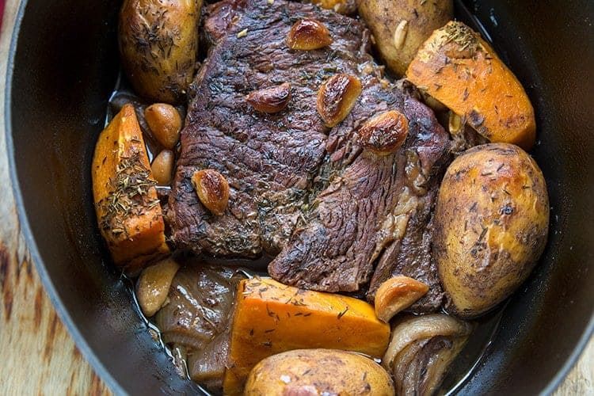

Dutch Oven Pot Roast

If there is one thing I cook year-round, it’s pot roasts.
If you try this roast recipe, you will come back again and again!
Ingredients:
- 1 tablespoon olive oil
- 4 to 5 pound blade or chuck beef roast
- 6 russet large potatoes washed and kept whole
- 1 large sweet potato peeled and sliced into very large chunks
- 2 red or white onions quartered
- 10 cloves garlic whole
- 1/2 cup red wine
- 2 cups beef stock
- 1 tablespoon thyme I used freeze dried
- Salt and black pepper
Steps:
- Preheat your oven to 325 F.
- Sprinkle the salt and pepper over the roast.
- Add the olive oil to a Dutch oven and start heating to medium-high heat.
- Brown the beef roast on all sides, approximately 1 to 2 minutes per side.
- Place your vegetables around the roast and the garlic on top.
- Combine the beef broth and red wine together. Pour over the top of the roast.
- Sprinkle the thyme over the top.
- Cover and place in the oven.
- Roast in the oven for 4-5 hours or until the meat pulls apart when you take two forks to it. The secret is low heat and slow!